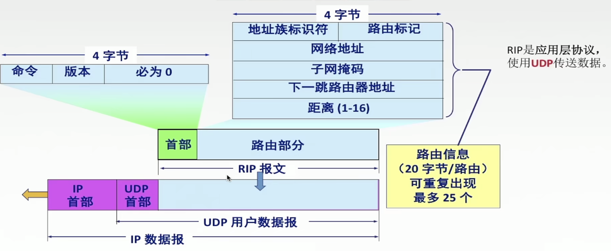
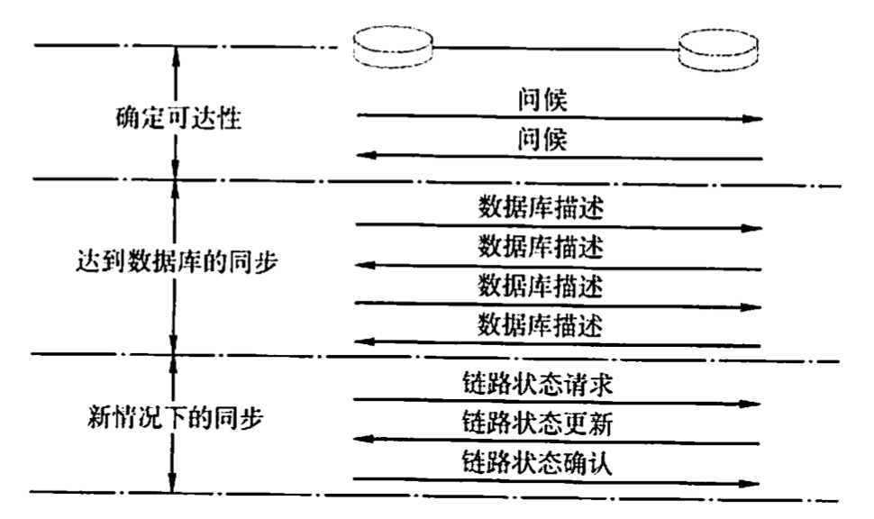
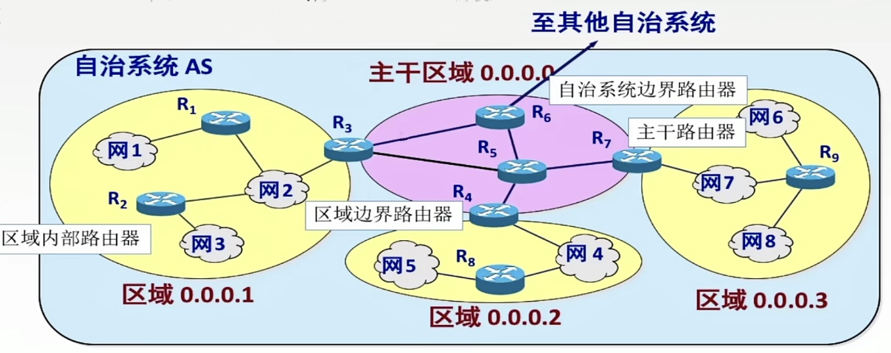
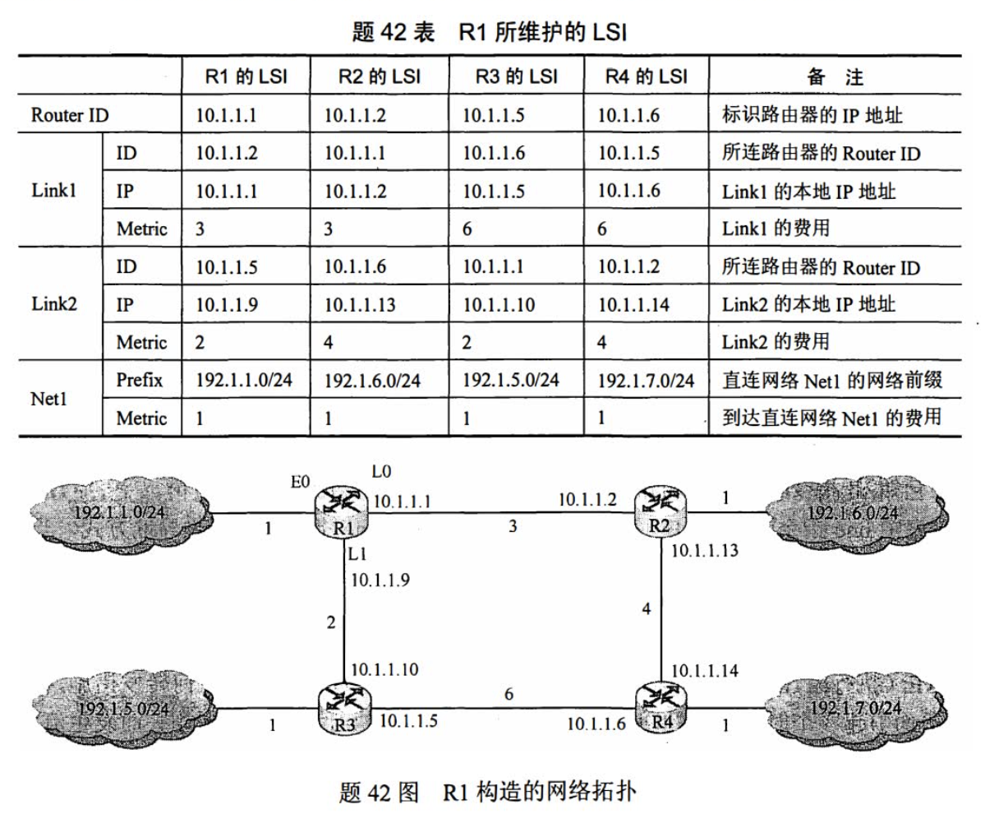
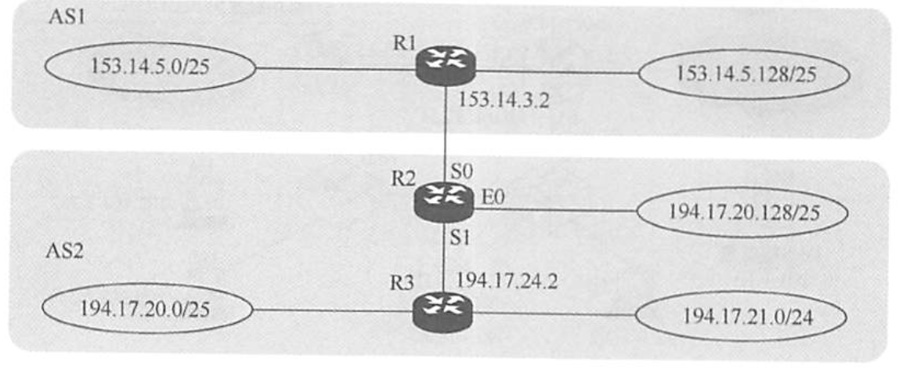

2022.08.14
[toc]
静态路由算法(又称非自适应路由算法)。
手工配置路由信息。适用于小型网络（小型军事/商业网络）。
默认路由:一种特殊的静态路由。
动态路由算法(又称自适应路由算法)。路由器之间交换信息,然后按照算法优化出来适应不断变化的网络。增加了网络负担。
静态动态最主要的区别：动态路由选择可随网络的通信量或拓扑变化而自适应地调整,而静态路由选择则需要手工去调整相关的路由信息。
下列关于路由算法的描述中,(B)是错误的
A.静态路由有时也被称为非自适应的算法
B.静态路由所使用的路由选择一旦启动就不能修改
C.动态路由也称自适应算法,会根据网络的拓扑变化和流量变化改变路由决策
D.动态路由算法需要实时获得网络的状态
主要思路：所有结点定期和邻居交换整个路由表。转发时选择代价最小的路径。
路由选择表：包含i) 每条路径的目的地，ii) 路径的代价。
更新路由表的情况：i) 被告知新结点，ii) 被告知去某节点的路径代价更小。
特点：适合小型网络，容易形成环路。
最常见的距离向量算法是RIP算法。
环路问题原因
例题：在距离向量路由协议中,()最可能导致路由回路的问题。
A.由于网络带宽的限制,某些路由更新数据报被丢弃
B.由于路由器不知道整个网络的拓扑结构信息,当收到一个路由更新信息时,又将该更新信息发回自己发送该路由信息的路由器
C.当一个路由器发现自己的一条直接相邻链路断开时,未能将这个变化报告给其他路由器
D.慢收敛导致路由器接收了无效的路由信息
【解析】在距离向量路由协议中,“好消息传得快,而坏消息传得慢”, 这就导致了当路由信息发生变化时,该变化未能及时地被所有路由器知道,而仍然可能在路由器之间进行传递,这就是“慢收敛”现象。慢收敛是导致发生路由回路的根本原因。
我的理解：
造成坏消息传得慢，好消息传得快，是因为好消息由“通知”产生，会迅速传播，坏消息由“等待”产生，生成时间较长。如果好消息可能时坏消息之前产生的，坏消息发送前，好消息又会传回来把坏消息覆盖。
🔑RIP为什么慢收敛，例题: https://www.bilibili.com/video/BV17V411z7hX/
flowchart LR
A o--o B & E o--o C & F o--o D
| From/Data | A | B | C | D | E | F |
|---|---|---|---|---|---|---|
| From B | 5 | 0 | 8 | 12 | 6 | 2 |
| From D | 16 | 12 | 6 | 0 | 9 | 10 |
| From E | 7 | 6 | 3 | 9 | 0 | 4 |
| B + 6 | 11 | 6 | 0 | 18 | 12 | 8 |
| D + 3 | 19 | 15 | 0 | 3 | 12 | 13 |
| E + 5 | 12 | 11 | 0 | 14 | 5 | 9 |
| Min | 11 | 6 | 0 | 3 | 5 | 8 |
| RIP | OFPS | BGP | |
|---|---|---|---|
| 层 | 应用层 | 网络层 | 应用层 |
| 用什么传输 | UDP | IP | TCP |
| 协议字段 | - | 89 | |
| 端口 | 520 | - | |
| 算法 | 距离向量 | 链路状态 | 路径向量 |
| 和谁发消息 | 相邻路由器 | AS内所有路由器 | 相邻路由器 |
| 发什么消息 | 路由表中全部的<目的地, 跳数> | 摘要信息/路由表部分全部信息 | 首次：全部路由表 更新：有变化部分 |
| 计算方法 | 跳数最少 | 综合计算 | |
| 什么时候发 | 30s一次，180s记为不可达 | 信息更新立刻广播，10s一次问候分组，30min更新一次数据库 |
交换信息方式：和邻居交换信息
交换信息内容：信息包括[每条路径的目的地(另一节点)，路径的代价(距离)]
信息更新时间：一般情况30s更新一次
距离向量：采用“跳数”作为距离的度量，跳数最多为15，跳数=16代表网络不可达
RIP2之前不支持子网掩码的广播，RIP2之后支持变长子网掩码和CIDR
RIP是应用层协议，使用UDP进行传输，端口520。
RIP最大的优点是实现简单、开销小、收敛过程较快。RIP的缺点如下：
RIP限制了网络的规模，它能使用的最大距离为15(16表示不可达)。
可能遇到“环路”问题
直接交付：路由器与目的网络直接相连
间接交付：路由器与目的网络间接相连，需要传给下一跳路由器

RIP执行过程
每个路由表项目都有三个关键数据：<目的网络N,距离d,下一跳路由器地址X>。对于每个相邻路由器发送过来的RIP报文，执行如下步骤：
A.IP地址
B.主机号
C.端口号
D.子网地址
【解析】判断一个IP分组的交付方式是直接交付还是间接交付,路由器需要根据分组的目的IP地址和该路由器接收端口的IP地址是否属于同一个子网来进行判断。具体来说,将该分组的源IP地址和目的IP地址分别与子网掩码进行“与”操作,如果得到的子网地址相同,那么该分组就采用直接交付方式,否则采用间接交付方式。
Ⅰ.路由选择分直接交付和间接交付
Ⅱ.直接交付时，两台机器可以不在同一物理网段内
Ⅲ.间接交付时，不涉及直接交付
IV.直接交付时，不涉及路由器
A. I和II
B. II和III
C. III和IV
D. I和IV
【答案】：B。发送站与目的站在同一网段内时可以直接交付。间接交付的最后一个路由器是直接交付。
【答案】：A。16代表不可达，真题中多次考察！
摘要
和谁发信息：每个节点拥有完整的拓网拓扑信息；把自己所知道的全部信息交换给所有节点（除了刚发给自己的那个节点），洪泛法。
OFPS属于网络层(考纲)或传输层(另一种说法)协议，使用IP数据报传输。
OFPS特点
OSPF对不同的链路可根据IP分组的不同服务类型(TOS)而设置成不同的代价。因此，OSPF对于不同类型的业务可计算出不同的路由，十分灵活。
10Mbps的以太网的链路开销是10，16Mbps令牌环网的链路开销是6，FDDI或快速以太网的开销是1，2M串行链路的开销是48，56KB串行线路的开销为1785（原文链接）
如果到同一个目的网络有多条相同代价的路径，那么可以将通信量分配给这几条路径。这称为多路径间的负载平衡。
所有在OSPF路由器之间交换的分组都具有鉴别功能，因而保证了仅在可信赖的路由器之间交换链路状态信息。
支持可变长度的子网划分和无分类编址CIDR。
每个链路状态都带上一个32位的序号，序号越大，状态就越新。
链路状态路由算法/OFPS协议的过程
在初始状态下：
只要一个路由器的链路状态发生变化：

为了使OSPF能够用于规模很大的网络,OPF将一个自治系统再划分为若干个更小的范围,叫做区域。每一个区域都有一个32位的区域标识符(用点分十进制表示)。区域也不能太大,在一个区域内的路由器最好不超过200个。

A.仅相邻路由器需要交换各自的路由表
B.全网路由器的拓扑数据库是一致的
C.采用洪泛技术更新链路变化信息
D.具有快速收敛的优点

1)假设路由表结构如下表所示，请给出题42图中R1的路由表，要求包括到达题42图中子网192.1.x.x的路由，且路由表中的路由项尽可能少。
找到最短路径，192.1.6和7从L1，原来只有这两个才用CIDR，而不是四个一起用😭
$$ \left.\begin{matrix} 192.1.6.0/24&\to192.1.00000110.0\ 192.1.7.0/24&\to192.1.00000111.0 \end{matrix}\right}=192.1.6.0/23 $$
| 目的网络 | 下一跳 | 端口 |
|---|---|---|
| 192.1.1.0/24（照抄） | - | E0 |
| 192.1.5.0/24（照抄） | 10.1.1.10 | L1 |
| 192.1.6.0/23 | 10.1.1.2 | L0 |
2)当主机192.1.1.130向主机192.1.7.211发送一个TTL=64的IP分组时，R1通过哪个接口转发该IP分组？主机192.1.7.211收到的IP分组TTL是多少？
【答案】L0，61
3)若R1增加一条Metric为10的链路连接Internet,则题42表中R1的LSI需要增加哪些信息
【答案】Net2：Prefix 0.0.0.0（😭Internet网络前缀默认是0.0.0.0，要背的） Metric 10
边界网关协议(BGP)只能力求寻找一条能够到达目的网络且比较好的路由（不能兜圈子），而并非寻找一条最佳路由。BGP采用的是路径向量路由选择协议，它与距离向量协议和链路状态协议有很大的区别。BGP是应用层协议，它是基于TCP的。
每个自治系统的管理员要选择至少一个路由器（可以有多个)作为该自治系统的“BGP发言人”。一个BGP发言人与其他自治系统中的BGP发言人要交换路由信息，就要先建立TCP连接（可见BGP报文是通过TCP传送的也就是说BGP报文是TCP报文的数据部分)，然后在此连接上交换BGP报文以建立BGP会话，再利用BGP会话交换路由信息。当所有BGP发言人都相互交换网络可达性的信息后，各BGP发言人就可找出到达各个自治系统的较好路由。
每个BGP发言人除必须运行BGP外，还必须运行该AS所用的内部网关协议，OSPF或RIP。BGP所交换的网络可达性信息就是要到达某个网络（用网络前缀表示）所要经过的一系列AS。
变化时更新：在BGP刚运行时，BGP的邻站交换整个BGP路由表，但以后只需在发生变化时更新有变化的部分。这样做对节省网络带宽和减少路由器的处理开销都有好处。
四种BGP报文
打开(Open)报文。用来与相邻的另一个BGP发言人建立关系。
【2013统考真题】假设Internet的两个自治系统构成的网络如下图所示，自治系统AS1由路由器R1连接两个子网构成；自治系统AS2由路由器R2、R3互联并连接3个子网构成。各子网地址、R2的接口名、R1与R3的部分接口IP地址如下图所示。

请回答下列问题：
1)假设路由表结构如下表所示。利用路由聚合技术，给出R2的路由表，要求包括到达图中所有子网的路由，且路由表中的路由项尽可能少。
| 目的网络 | 下一跳 | 接口 |
|---|---|---|
【答案】😭AS1里边的两个网络进行聚合，AS2里边的两个网络进行聚合，而不是和路由器聚合！
$$ \left.\begin{matrix} 153.14.5.0/25&\to153.14.5.0|0000000\ 153.14.5.128/25&\to153.14.5.1|0000000 \end{matrix}\right}=153.14.5.0/24 $$
$$ \left.\begin{matrix} 194.17.20.0/25&\to194.17.00010100.0\ 194.17.21.0/24&\to194.17.00010101.0 \end{matrix}\right}=194.17.20.0/23 $$
| 目的网络 | 下一跳 | 接口 |
|---|---|---|
| 153.14.5.0/24 | 153.14.3.2 | S0 |
| 194.17.20.0/23 | 194.17.24.2 | S1 |
| 194.17.20.128/25 | - | E0 |
2)若R2收到一个目的1P地址为194.17.20.200的IP分组，R2会通过那个接口转发该IP分组？
【答案】：（最长前缀匹配原则）E0
3)R1与R2之间利用哪个路由协议交换路由信息？该路由协议的报文被封装到哪个协议的分组中进行传输？
【答案】：AS间，用BGP，封装在TCP中